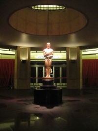

Wins and Snubs
Award Records
The Big Five
Only three films have won all of the Big Five awards:
| Year | Best Picture | Best Director | Best Actress | Best Actor | Best Adapted Screenplay |
|---|---|---|---|---|---|
| 1934 | It Happened One Night | Frank Capra | Claudette Colbert | Clark Gable | Robert Riskin |
| 1975 | One Flew Over the Cuckoo's Nest | Miloš Forman | Louise Fletcher | Jack Nicholson | Lawrence Hauben & Bo Goldman |
| 1991 | The Silence of the Lambs | Jonathan Demme | Anthony Hopkins | Jodie Foster | Ted Tally |
Most Awarded Films
The most awards given for a film is 11, with three films holding this record:- Ben-Hur (1959)
- Titanic (1997)
- The Lord of the Rings: The Return of the King (2003)
Best Picture
Two sequels have won Best Picture: “The Godfather Part II” (after “The Godfather” won Best Picture) and “The Lord of the Rings: The Return of the King.”One horror film has won Best Picture—“The Silence of the Lambs” in 1991.
Best Director
John Ford has the most awards for Best Director, having won four.Kathryn Bigelow is the first and only woman to win Best Director (for “The Hurt Locker” in 2009).
Best Acting
Katharine Hepburn has the most acting awards, having won four Best Actress Oscars.James Dean was the first actor to be nominated posthumously (Best Actor for “East of Eden”) and Peter Finch was the first actor to win posthumously (Best Actor for “Network”).
Best Screenplay
The only siblings to win Best Original Screenplay are Joel and Ethan Coen (for “Fargo”). They are also the third sibling set to win Best Adapted Screenplay (for “No Country for Old Men”).The only father-daughter pair to win Best Original Screenplay are Francis Ford Coppola (“Patton”) and Sofia Coppola (“Lost in Translation”).
Biggest Snubs
Charlie Chaplin was nominated for his work on “The Great Dictator” (Best Picture, Best Actor, Best Original Screenplay), but did not win any awards that year. He never won for these categories.
Best Picture
1931: “City Lights” and “Frankenstein” were not nominated. “Cimarron” won.
1933: “King Kong” was not nominated. “Cavalcade” won.
1936: “Modern Times” was not nominated. “The Great Ziegfield” won.
1952: “Singin' in the Rain” was not nominated. “The Greatest Show on Earth” won.
1956: “Seven Samurai” was not nominated. “Around the World in 80 Days” won.
1968: “2001: A Space Odyssey” and “Rosemary's Baby” were not nominated. “Oliver!” won.
Best Director
Eight directors have been nominated multiple times for Best Director and never won, including notable directors Alfred Hitchcock (5), Federico Fellini (4), Stanley Kubrick (4), and Sidney Lumet (4). In 1960 Alfred Hitchcock was nominated for directing Psycho, but lost to director Billy Wilder's work on “The Apartment.” Stanley Kubrick was not nominated for directing “Spartacus” that year.
Best Acting
Peter O'Toole holds the record for most acting nominations without a win (7 for Best Actor). Glenn Close for most acting nominations for a woman without a win (4 for Best Actress and 3 for Best Supporting Actress), and Deborah Kerr for most Best Actress nominations without a win (6).
Learn about more Academy Award Records